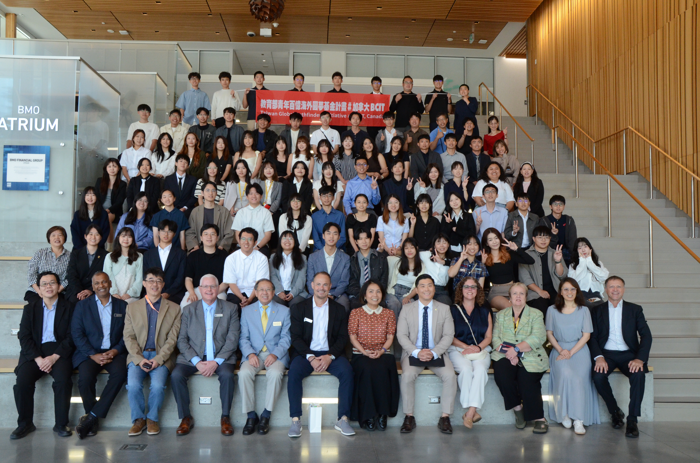
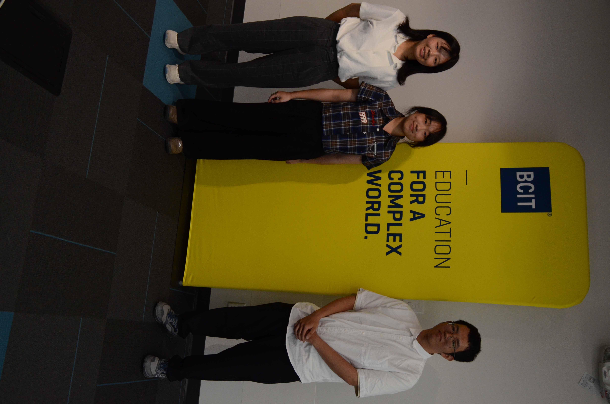

很榮幸與各位分享，我通過教育部青年發展署「青年百億海外圓夢基金計畫」115年第二梯次「海外翱翔組」的審查，於2025年七月、八月至加拿大的不列顛哥倫比亞理工學院(BCIT)進行一個月的機械工程方面的學習。
在BCIT的四個禮拜，我學習到電腦輔助設計軟體（SOLIDWORKS、Fusion 360等）的建模、組合、工程圖與G code撰寫，並且實際操作車床、銑床、CNC等機械製造技術。此外我也透過BCIT規劃的機械工程工作坊，學習到系統工程、製造、品管流程，並且與兩位同學完成「智慧無障礙公車斜坡系統」，以工程技術解決人本交通議題。
這次同時也是我第一次長時間在國外長時間生活，我在溫哥華地區規劃了生態旅遊，實際深入探查當地環境與人文特色，並與許多人交流獲得許多回饋。這次難得的經驗不僅提供給我走到國際的勇氣，並帶給我許多的思考與反思，期待我能帶著這些經歷，讓我成為一位更好的工程師。
我撰寫了「青年百億計畫經歷」，記錄了我申請本計畫的過程與經歷，歡迎對青年百億計畫有興趣的讀者可以閱讀本文章並與我交流。
👉 完整心得文章：《青年百億計畫申請經歷》
HackMD文章

